Conteúdo mensal
Até 12 vídeos, 8 artes e 4 carrosséis, organizados em ciclos de quatro semanas.

Falar com a PulseProposta comercial Pulse Marketing × PHOS Energia
A PHOS já possui experiência, projetos e conhecimento técnico. Nossa missão é fazer essa autoridade chegar aos decisores certos antes que a oportunidade chegue aos concorrentes.
Resumo executivo
Uma presença previsível, profissional e constante para ser lembrada antes da decisão de compra. Esta proposta reúne estratégia, produção, distribuição e mídia, com escopo e responsabilidades totalmente transparentes.
Até 12 vídeos, 8 artes e 4 carrosséis, organizados em ciclos de quatro semanas.
Instagram, TikTok, LinkedIn, Google Meu Negócio e Threads, com adaptação para cada canal.
Gestão de campanhas no Meta Ads. A verba dos anúncios é separada e paga diretamente pela PHOS.
R$ 2.500 por mês durante o período inicial recomendado de três meses.
Uma única mensalidade reúne planejamento, até 24 conteúdos, duas captações presenciais, publicação em cinco canais, gestão de Meta Ads, acompanhamento e relatório. A verba dos anúncios é separada e controlada diretamente pela PHOS.
O custo de permanecer invisível
Sem comunicação frequente, anos de experiência, projetos e capacidade técnica ficam restritos a quem já conhece a empresa.
Quando a geração de oportunidades depende apenas da rede atual, a marca perde previsibilidade e alcance comercial.
Enquanto a PHOS permanece discreta, empresas menos experientes podem parecer mais preparadas simplesmente porque são mais vistas.
01 · Estratégia
A comunicação mostrará quais problemas a PHOS resolve, como sua experiência reduz riscos e por que procurar a equipe antes que uma decisão técnica se transforme em atraso, prejuízo ou retrabalho.
Organizar uma mensagem clara sobre os serviços, diferenciais e áreas de atuação da PHOS.
Transformar conhecimento, projetos, cases e bastidores em provas consistentes de autoridade.
Alcançar públicos relevantes e usar o retorno comercial para aperfeiçoar conteúdos e campanhas.
Públicos prioritários
Territórios de comunicação
02 · Entregas
As entregas são organizadas em ciclos de quatro semanas. O objetivo não é preencher redes sociais, mas criar uma presença capaz de educar o mercado, reduzir objeções e abrir conversas comerciais.
Pesquisa, pauta, roteiro, orientação de gravação, edição, legendas, elementos gráficos e adequação aos canais.
Conceito, texto, design, aplicação da identidade visual e preparação dos arquivos para publicação.
Até oito páginas por carrossel, incluindo redação ou adaptação da copy e desenvolvimento visual.
Realizadas em datas combinadas, com participantes e ambientes disponibilizados pela PHOS.
Publicação orgânica incluída
Distribuição de referência
O calendário final será definido a cada ciclo, respeitando o limite mensal contratado.
03 · Conteúdo
Conexão, homologação, normas, faturamento e compensação.
Diagnósticos, fotovoltaica, eletromobilidade e proteção de ativos.
Cases, bastidores, conhecimento da equipe e dúvidas reais do mercado.
04 · Tráfego pago
Planejamento, testes e otimizações para Instagram e Facebook, orientados pelo custo e pela qualidade das oportunidades geradas.
A verba de anúncios não está incluída na mensalidade. O valor será definido separadamente e pago pela PHOS diretamente às plataformas.
PlanejamentoObjetivos, públicos, segmentações e estrutura das campanhas.
Criação e testesAnúncios, textos, criativos e comparação de abordagens.
OtimizaçãoMonitoramento, ajustes periódicos e análise de custo e qualidade.
Integração comercialUso do retorno da PHOS sobre os leads para orientar as próximas decisões.
05 · Operação
Um processo objetivo para manter ritmo, qualidade técnica e previsibilidade — da pauta ao relatório.
Pautas, prioridades e agenda do ciclo.
Captação, edição, design e redação.
Revisão técnica e aprovação pela PHOS.
Distribuição dos materiais aprovados.
Resultados, aprendizados e ajustes.
Responsabilidades
Condições operacionais
Não está incluído nesta proposta
06 · Investimento
R$ 2.500,00
por 3 mesesO investimento contempla
Condição de continuidade
A média do faturamento mensal da PHOS durante os três meses iniciais será usada como base. Em cada mês da continuidade, a bonificação corresponderá a 3% da diferença positiva entre o faturamento bruto do mês e essa média. Se o faturamento não superar a base, não haverá bonificação naquele mês. A apuração usará os dados de faturamento fornecidos pela PHOS e será formalizada no contrato de continuidade.
A Pulse executará o escopo, acompanhará os dados e otimizará o trabalho. Resultados comerciais também dependem de mídia, oferta, mercado, preços, atendimento, processo de vendas e tempo de maturação. Esta proposta não garante quantidade específica de seguidores, leads, vendas ou faturamento.
07 · Próximo passo
Se a proposta estiver alinhada, o próximo passo é uma conversa para esclarecer dúvidas, confirmar os detalhes operacionais e definir a data de início.
Conversar pelo WhatsAppProposta comercial preparada para a PHOS Energia.
Esta apresentação tem caráter exclusivamente comercial e informativo. A contratação dos serviços, inclusive a condição de continuidade e sua bonificação, será formalizada posteriormente em documento próprio, após o alinhamento entre as partes.